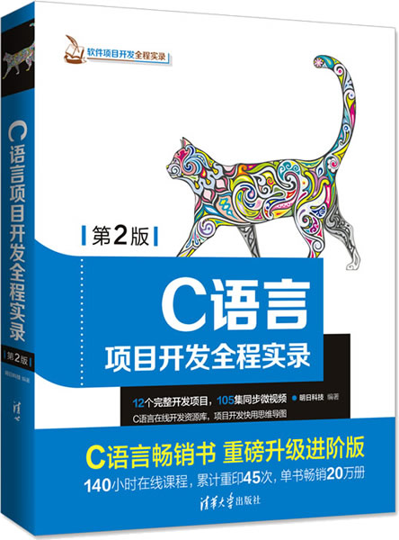

首页 > 书籍下载
《C语言项目开发全程实录》第2版PDF下载（高清完整版）
|  | 作者：明日科技 |
| 出版时间：2018年05月01日 | |
| 出版社：清华大学出版社 | |
| 书号ISBN：9787302498827 | |
| 总页数：414 | |
| 总字数：72.6W |
这是一本手把手带领 C 程序员做项目的书籍，全书包含 12 个完整实战项目，适合有 C 语言基础、想动手实操的读者。
这里提供的是《C语言项目开发全程实录》第 2 版的高清 PDF 下载，内容完整，附带目录标签。
这本书中的 12 个项目是作者精心挑选的，几乎涵盖了各大主流行业用到的核心技术。每个项目尽可能接近真实的开发过程，从系统分析到环境搭建，从参数设置到数据库配置，从模块开发到完整项目实现。做完这些项目，你的编程能力能达到中等靠上的水平。
一位购买了这本书的读者给出的评价是：
适合有 C 基础的人看，学习借鉴一下别人的编程思维还是不错的，内容蛮丰富的。
还有一位读者也给出了好评：很实用的 C 语言书籍，内容新，对深入掌握 C 语言有帮助。
书籍目录
- 第1章 火车订票系统（DEV C 实现） 1
- 1.1 开发背景 2
- 1.2 需求分析 2
- 1.3 系统设计 2
- 1.4 预处理模块设计 5
- 1.5 主函数设计 7
- 1.6 添加模块设计 12
- 1.7 查询模块设计 14
- 1.8 订票模块设计 17
- 1.9 修改模块设计 19
- 1.10 显示模块设计 21
- 1.11 保存模块设计 22
- 1.12 开发总结 24
- 第2章 通讯录管理系统（DEV C 实现） 25
- 2.1 开发背景 26
- 2.2 系统分析 26
- 2.3 系统设计 26
- 2.4 文件引用 28
- 2.5 声明结构体 28
- 2.6 函数声明 29
- 2.7 功能菜单设计 29
- 2.8 通讯录录入设计 32
- 2.9 通讯录查询设计 34
- 2.10 通讯录删除设计 35
- 2.11 通讯录显示设计 37
- 2.12 通讯录数据保存设计 38
- 2.13 数据加载设计 39
- 2.14 开发总结 41
- 第3章 学生个人消费管理系统（DEV C 实现） 42
- 3.1 开发背景 43
- 3.2 需求分析 43
- 3.3 系统设计 43
- 3.4 预处理模块设计 47
- 3.5 主函数设计 49
- 3.6 录入学生消费信息模块 53
- 3.7 查询学生消费信息模块 59
- 3.8 删除学生消费信息模块 61
- 3.9 显示学生消费信息模块 64
- 3.10 保存学生消费信息模块 66
- 3.11 添加学生消费信息模块 68
- 3.12 开发总结 72
- 第4章 企业员工管理系统（DEV C 实现） 73
- 4.1 开发背景 74
- 4.2 系统分析 74
- 4.3 系统设计 75
- 4.4 头文件模块设计 76
- 4.5 主函数模块设计 78
- 4.6 系统初始化模块设计 79
- 4.7 功能菜单模块设计 82
- 4.8 系统登录模块设计 85
- 4.9 员工信息添加模块设计 87
- 4.10 员工信息删除模块设计 90
- 4.11 员工信息查询模块设计 92
- 4.12 员工信息修改模块设计 100
- 4.13 员工信息统计模块设计 107
- 4.14 系统密码重置模块设计 108
- 4.15 开发总结 110
- 第5章 超级万年历（DEV C 实现） 111
- 5.1 开发背景 112
- 5.2 需求分析 112
- 5.3 系统功能设计 113
- 5.4 预处理模块设计 115
- 5.5 主窗体设计 118
- 5.6 打印月历 140
- 5.7 其他算法 150
- 5.8 开发总结 161
- 第6章 贪吃蛇游戏（Visual C 6.0实现） 163
- 6.1 开发背景 164
- 6.2 需求分析 164
- 6.3 系统功能设计 165
- 6.4 预处理模块设计 167
- 6.5 游戏欢迎界面设计 171
- 6.6 游戏主窗体设计 177
- 6.7 游戏逻辑 184
- 6.8 游戏失败界面设计 195
- 6.9 游戏说明模块 204
- 6.10 开发总结 207
- 第7章 学生信息管理系统（Visual C 6.0实现） 208
- 7.1 开发背景 209
- 7.2 需求分析 209
- 7.3 系统设计 209
- 7.4 预处理模块设计 214
- 7.5 主函数设计 216
- 7.6 录入学生信息模块 218
- 7.7 查询学生信息模块 222
- 7.8 删除学生信息模块 224
- 7.9 修改学生信息模块 226
- 7.10 插入学生信息模块 228
- 7.11 学生成绩排名模块 230
- 7.12 显示所有学生信息 232
- 7.13 开发总结 233
- 第8章 图书管理系统（Visual C 6.0 MySQL实现） 234
- 8.1 概述 235
- 8.2 系统设计 235
- 8.3 数据库设计 239
- 8.4 C语言开发数据库程序的流程 250
- 8.5 C语言操作MySQL数据库 253
- 8.6 文件引用 262
- 8.7 变量和函数定义 263
- 8.8 主要功能模块设计 263
- 8.9 开发总结 288
- 第9章 网络通信系统（Visual C 6.0实现） 289
- 9.1 网络通信系统概述 290
- 9.2 技术攻关 292
- 9.3 网络通信系统主程序 301
- 9.4 点对点通信 304
- 9.5 服务器中转通信 312
- 9.6 程序调试与错误处理 321
- 9.7 开发总结 323
- 第10章 窗体版图书管理系统（Visual C 6.0 WINAPI MySQL数据库实现） 326
- 10.1 开发背景 327
- 10.2 需求分析 327
- 10.3 系统设计 327
- 10.4 技术指南 330
- 10.5 工具模块设计 333
- 10.6 登录模块设计 336
- 10.7 客户端主界面设计 340
- 10.8 基本信息管理模块设计 345
- 10.9 库存管理模块设计 354
- 10.10 查询模块设计 362
- 10.11 开发总结 366
- 第11章 商品管理系统（Visual C 6.0实现） 367
- 11.1 开发背景 368
- 11.2 需求分析 368
- 11.3 系统设计 368
- 11.4 预处理模块设计 369
- 11.5 功能菜单设计 371
- 11.6 商品录入设计 374
- 11.7 商品查询设计 380
- 11.8 商品删除设计 382
- 11.9 商品修改设计 386
- 11.10 商品记录插入设计 389
- 11.11 商品记录排序设计 392
- 11.12 商品记录统计设计 395
- 11.13 开发总结 396
- 第12章 MP3音乐播放器（Linux系统） 397
- 12.1 GStreamer简介 398
- 12.2 界面设计 400
- 12.3 代码设计 401
- 12.4 开发总结 414
书籍下载
一键登录，免费下载完整版 PDF，文件名称：《C语言项目开发全程实录》第2版.pdf